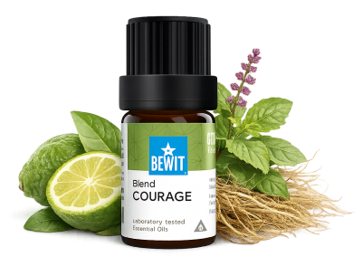

Odvaha není absence strachu — je to rozhodnutí jednat i přes něj. Esence vám pomáhají najít tu vnitřní sílu, která ve vás vždy byla. Věřte si. Máte na to. Výsledky přicházejí s pravidelností — dopřejte si čas.

pro vnitřní sílu a jistotu
Před důležitou prezentací, zkouškou nebo životní změnou. Ukáži vám, jak esencemi posílit sebedůvěru, překonat strach a vstoupit do každé situace s hlavou vztyčenou.
Odvaha

Směs sestavená přímo pro chvíle, kdy potřebujete odvahu a sebejistotu.
Posiluje vnitřní sílu, překonává pochybnosti a pomáhá věřit si v klíčových momentech.
💧 Jak použít: zředěný v nosném oleji (např. jojobový) naneste na zápěstí, solar plexus nebo zátylek — ideálně 15–20 minut před důležitou chvílí.
Zjistit více →💧 Naneste trochu nosného oleje (např. jojobový nebo kokosový) na chodidla, přidejte 1 kapku na každé chodidlo a rozetřete. Nebo kápněte 1 kapku na dlaň, rozetřete mezi dlaněmi, přiložte na nos a ústa a pomalu se zhluboka nadechněte. Více způsobů aplikace →
Odvaha není absence strachu — je to rozhodnutí jednat i přes něj. Esence vám pomáhají najít tu vnitřní sílu, která ve vás vždy byla. Věřte si. Máte na to. Výsledky přicházejí s pravidelností — dopřejte si čas.
🌿 Všechny esence, které na tomto webu doporučuji, jsou od BEWIT. Jako registrovaný zákazník můžete nakupovat se slevou až 50 % na vybrané produkty.
Registrace u BEWIT zdarma →